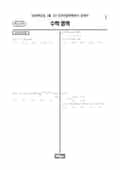

문제지


시험지를 먼저 풀어 보세요. 등급컷·표준점수·난이도는 흐리게 가려 뒀어요.
| 등급 | 원점수 | 표준점수 | 백분위 |
|---|---|---|---|
| 1 | 81 | 134 | 96 |
| 2 | 71 | 127 | 88 |
| 3 | 62 | 119 | 77 |
| 4 | 46 | 106 | 60 |
| 5 | 25 | 89 | 39 |
| 6 | 13 | 80 | 21 |
| 7 | 9 | 77 | 12 |
| 8 | 6 | 74 | 5 |
등급별 컷 · 입시기관 3곳 원점수 추정 종합(이투스·종로학원·대성마이맥) · 공통+선택 점수 조합에 따라 다를 수 있음 · 만점 100점
| 등급 | 표준점수 이상 | 인원(명) | 비율 |
|---|---|---|---|
| 1 | 134 | 13,659 | 4.11% |
| 2 | 127 | 29,209 | 8.79% |
| 3 | 119 | 35,087 | 10.56% |
| 4 | 106 | 56,595 | 17.03% |
| 5 | 89 | 69,044 | 20.78% |
| 6 | 80 | 65,713 | 19.77% |
| 7 | 77 | 27,669 | 8.33% |
| 8 | 74 | 23,484 | 7.07% |
| 9 | 67 | 11,862 | 3.57% |
수학 영역 전체 응시자 기준이에요.
출처: 시·도교육청이 공개한 전국연합학력평가 성적 분석·통계자료(공개 자료 보기).
발행 기관: 시·도교육청(전국연합학력평가). 파일 위치: 이 사이트가 보관한 사본. 저작권은 발행 기관에 있습니다. 원본과 다르거나 게시 중단이 필요하면 연락처로 알려 주세요. 등급컷 출처 구분은 데이터 원칙에서 설명합니다.
막대 색은 역대 대비 난이도 · 진한 막대가 이 시험 · 막대를 누르면 그 회차로 이동
| 회차 | 1등급컷 | 표점 최고 | 1등급 표점 | 난이도 |
|---|---|---|---|---|
| 3월 학평2026년 고3이 시험 | 81 | 150 | 134 | 쉬움 |
| 10월 학평2025년 고3 | 82 | 146 | 132 | 매우 쉬움 |
| 7월 학평2025년 고3 | 84 | 148 | 135 | 매우 쉬움 |
| 5월 학평2025년 고3 | 76 | 156 | 135 | 보통 |
| 3월 학평2025년 고3 | 76 | 157 | 136 | 보통 |
| 10월 학평2024년 고3 | 83 | 151 | 136 | 쉬움 |
| 7월 학평2024년 고3 | 76 | 156 | 135 | 어려움 |
| 5월 학평2024년 고3 | 74 | 167 | 141 | 매우 어려움 |
| 3월 학평2024년 고3 | 79 | 154 | 137 | 어려움 |
| 10월 학평2023년 고3 | 81 | 150 | 135 | 쉬움 |